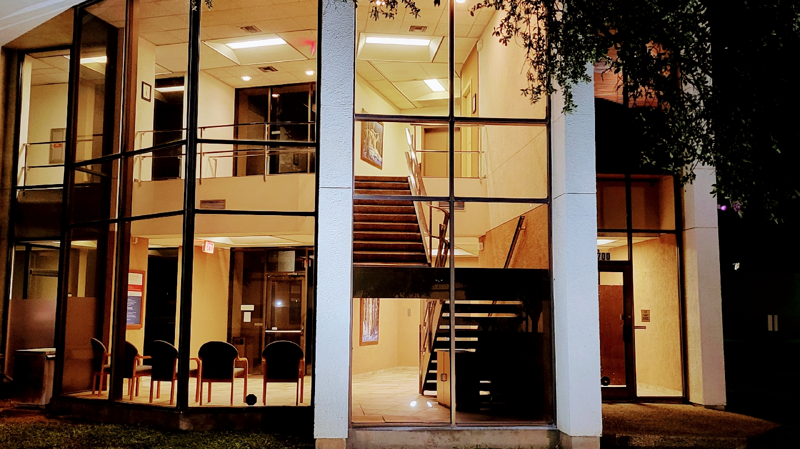
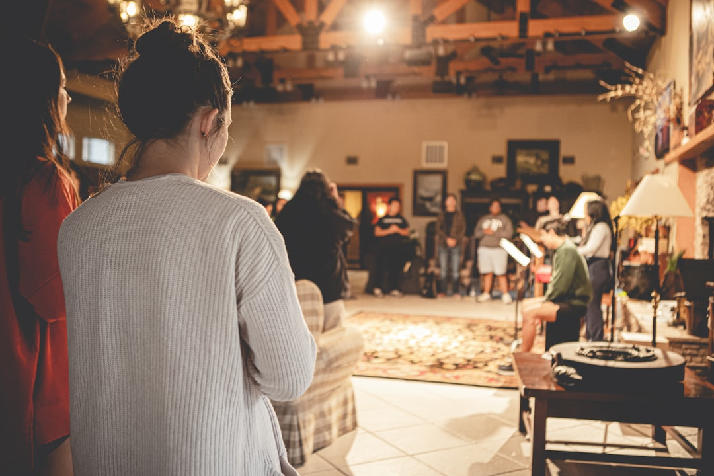

№ 01 Hurst, TX · Faith-rooted pastoral counseling
Christ-centered counsel for the soul, the marriage, and the everyday.
The Penewit Institute is a faith-based pastoral counseling practice serving individuals and couples across the Dallas/Fort Worth area — pairing Christ-centered guidance with the ARNO Temperament Profile to help you understand who God created you to be.


№ 02 About the practice
The Penewit Institute — a broader choice for personal needs
Fort Worth Christian Counseling offers a broader choice for meeting our patients' personal needs. Online counseling is proven to be a successful way to provide answers and healing — bringing the same Christ-centered guidance into the rhythm of your week, whether you join us in our Hurst office or from your living room.
№ 03 What we offer
Faith-based counseling & temperament insight
Pastoral counsel for individuals and couples — paired with the ARNO Temperament Profile to bring lasting clarity to who you were created to be.
Faith-Based Counseling
- Faith-based counseling for individuals
- Pre-marital & marriage counseling
- Individual counseling
- Online counseling — across the DFW area
Temperament Assessment
- ARNO Temperament Profile
- Temperament Needs assessment
- The 5 Temperaments profiling
- Pastoral interpretation & follow-through
Counsel for these places in life

It told who He created us to be — and how we operate. Twenty-five months in, our lives have been better ten-fold, both personally and maritally.
From Rachel and John · Penewit Institute clients
№ 04 A specialty within a specialty
The 5 Temperaments
The ARNO Temperament Profile is the cornerstone of our work — a Christ-centered tool for understanding the temperament God built into you, and the needs that flow from it.
i.
The Supine
"The Servant Temperament" — gentle, tender souls who feel their mission on Earth is to serve others.
ii.
The Melancholy
A great "thinker" — task oriented, able to think things through more efficiently than any other temperament.
iii.
The Sanguine
"The lovers" of the 5 temperaments — they LOVE people and have a genuine temperament need to be around a great quantity of people.
iv.
The Choleric
A natural leader — realized from a young age they were great leaders, and proven it over and over again.
v.
The Phlegmatic
"A well balanced person" — a blending temperament with a blend of Phlegmatic as well as the other 4 temperaments.
№ 05 Meet our counselors
A husband & wife, walking with you
Pastoral counsel from two pastoral counselors — together for the marriage, the soul, and the season you're in.
Request an appointment →Dr. W. H. Penewit
D.Min
Doctor of Ministry · Christian Counselor
Faith-based counseling · Marriage counseling · ARNO Temperament Profile · Spiritual guidance · Boundary work
Full bio →Rev. Linda Penewit
C. P. M.
Certified Pastoral Minister
Faith-based counseling · Marriage counseling · Pastoral care
Full bio →№ 06 What people are saying
In their own words
From clients we've walked with at the Penewit Institute.
The Penewits are Texas best kept secret. They are high impact people. 25 months ago, my wife and I were not doing well at all in our marriage and I was lost emotionally and not focused spiritually. Since seeing the Penewits, for a period of about 6 months, our lives have been better 10-fold at least, both personally and maritally. They first took inventory of our situation and accurately assessed what we needed. We took the ARNO Temperament profile. The results and their counsel helped turn things around in a critical and vulnerable time. We received grace for ourselves and one another to experience life as we never have in our 31 years together.
From Rachel & John
Doc and Linda are great people! Their lives are centered around the Holy Spirit as His teachings guide them through helping others in need. Doc brought me to God, and explained how God made me. Doc gave me value as a teacher, counselor and friend. I've known Doc and Linda for many years and I can say he remains in contact with me. If you need guidance, feel like life isn't worth living, if you self medicate and have pain in your life, PLEASE PLEASE PLEASE seek these good people out.
From Kenneth
№ 07 Your first 2 sessions
How we begin together
Reach out
Use the contact form on the website to contact us for information or to set an appointment. We welcome new clients.
An honest inventory
We sit with you and your situation, take an accurate inventory of what's going on, and listen for what you really need.
Christ-centered counsel
From there we walk forward together — pastoral counsel, the ARNO Temperament Profile when fitting, and steady guidance week to week.
№ 08 Access & getting started
Beginning the conversation
i. About our practice
- Pastoral counselingA faith-based, Christ-centered practice — not a medical or psychiatric clinic.
- Licensed by the NCCALicensed by the National Christian Counselor Association.
- Husband & wife counselorsPastoral counsel from two pastoral counselors, together.
ii. Access
- In-office in Hurst700 N. E. Loop 820, Suite 200 B, Hurst, Texas.
- Online counselingProven to be a successful way to provide answers & healing — across the DFW area.
- How to beginReach out through the contact form or by phone — we'll respond and set a first appointment.
№ 09 Schedule an appointment
Reach out today
Use the contact form on the website to contact us for information or to set an appointment. We welcome new clients!
We welcome new clients — reach out and we'll set an appointment.
A quiet office along N. E. Loop 820 in Hurst.
Our affiliations